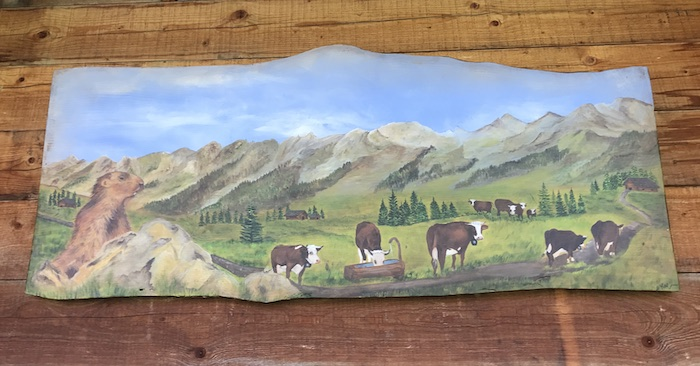
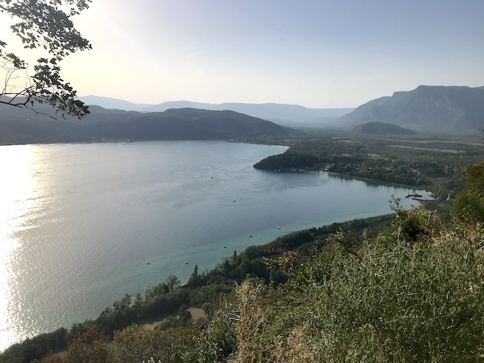
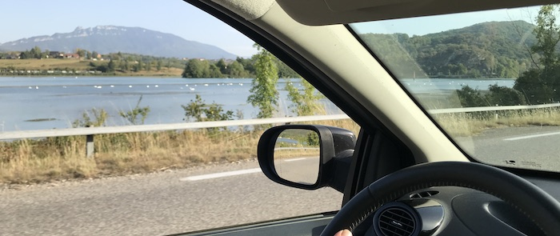

Vacances à La Clusaz en août 2023
Petit bilan de notre séjour à La Clusaz avec les parents, en pleine canicule, pour changer.
Le village
La Clusaz est un village principalement aménagé pour le ski. En plein été, les activités sont plus variées : VTT, luge, saut en bouée, etc. On sent bien, quand on s’y promène, que tout est fait pour inciter le touriste à consommer. Je n’aime pas trop l’idée. Par contre, ce qui m’a plu, ce sont les mascottes rigolotes que l’on peut découvrir à droite ou à gauche, quand on s’y attend le moins.


Le col des Annes
Nous sommes montés au col des Annes, en passant par le lac de Maroly et le Grand Bornand. Balade sur petite route de campagne (empruntée par des 4x4) et sentiers de prairies avec faible dénivelé. Il faisait sacrément chaud et on aurait bien aimé se baigner dans le lac ! Malheureusement, ce n’est pas autorisé. L’environnement dans son ensemble est particulièrement fragile dans ces montagnes, notamment à cause du nombre importants de marcheurs, des élevages bovins et des aménagements routiers. Le col est occupé par des fermes et des restaurants, accessibles en voitures ! Quel dommage.
Les confins
Nous nous sommes aussi promenés aux Confins, où nous avons vu des chèvres, des vaches, des ânes. Toute la famille ! Balade avec dénivelé, le long de la montagne, sur chemin carrossable puis sur un sentier dans les bois. Il y avait un soi-disant refuge et des chalets qui ressemblent plus à de vieilles granges délabrées. Pas assez montagneux et sauvage à mon goût, mais c’est toujours sympa de se balader en montagne.
Le retour
Évidemment, nous nous sommes perdus. Lire un GPS est aussi compliqué que de préparer le parcours en amont, à la main. Bref, nous avons eu l’agréable surprise de nous retrouver sur une route tortueuse au-dessus du lac du Bourget, dont nous avons eu une vue magnifique.
Et nous avons retrouvé notre route et longé le lac du Lit du Roi, magnifique également avec tous ses cygnes qui se prélassaient au soleil.
Conclusion
On s’est bien amusés, on a pu profiter de la belle vue sur les Alpes. Nous sommes mêmes montés au col de la Colombière (en voiture) pour voir le Mont Blanc au loin. Tout est très joli, mais globalement, ce n’est pas assez sauvage. Il y a énormément d’aménagements humains, qui servent pour la plupart l’hiver, et qui dénaturent le paysage. Ça fait perdre de son charme à cette chaîne de montagnes magnifiques.